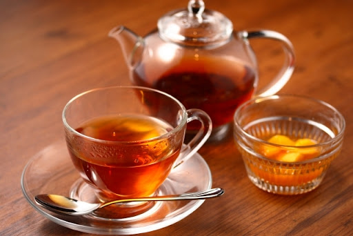

フード
フード一覧
やみたこ
大宮茶会事件
きのたけ平和ショップ
きつねのほこら
やみたこ（たこ焼き）
企画概要
闇鍋要素を入れたたこ焼きを販売します。普通のたこやきもあります。
開催場所・時間
8F フードエリア・OPから10分後〜ED10分前まで
なくなり次第終了です。
大宮茶会事件

企画概要
茶道体験（予約制）&紅茶注ぎ選手権を開催します！
開催場所・時間
8F フードエリア・OPから10分後〜ED10分前までなくなり次第終了です。
きのこたけのこ平和ショップ
企画概要
我々はきのこたけのこ戦争の終結を望んでいます
この度は両者の関係を安定化させるために、
きのこの山とたけのこの里を共に販売することにしました
ぜひ足を運んでみてください
平和万歳！！！！！
開催場所・時間8F フードエリア・OPから10分後〜ED10分前まで なくなり次第終了です。
金額100円
きつねのほこら
企画概要抹茶羊羹、モナカ、カフェオレを販売する京都風カフェです！
開催場所・時間8F フードエリア・OPから10分後〜ED10分前まで なくなり次第終了です。
フード詳細
たこ焼き（通常）
※たこ焼き、やみたこ共に100円
アレルゲン
- 卵
- 小麦
- 乳
- 大豆
- りんご
- マヨネーズ
たこ焼き（やみたこ）
アレルゲン
- 卵
- 小麦
- 乳
- 大豆
- 牛肉
- 豚肉
- 鶏肉
- ゼラチン
- チョコレート
きのこたけのこ平和ショップ
- きのこの山
- 100円
- たけのこの里
- 100円
きつねのほこら
もなか + 抹茶羊羹 + コーヒー
もなか（大豆）
抹茶羊羹（大豆）
アイスカフェラテ（牛乳）
水出しコーヒー（なし）
300円
100円
200円
100円
100円